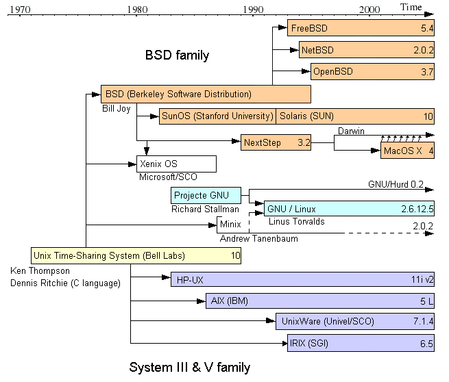
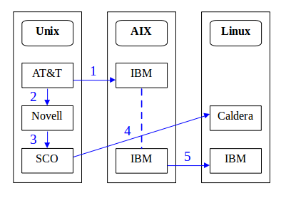

SCO 控告 IBM 一案，anything more left??

一、前言
2003 年 3 月 7 日，The SCO Group, Inc. (SCO) 聲稱 International Business Machines Corporation (IBM) 侵犯其 UNIX 之智慧財產權，將 UNIX 技術移轉到 Linux 上，違反當初與其簽署之商業秘密協定，為此向 IBM 求償 10 億美元。本案歷時三年餘，尚未有確切判決，最近一次開庭時間訂於 2007 年 2 月。
二、UNIX 歷史背景（註 1）
（一）UNIX 之演變與旁枝歷史（註 2）：
UNIX 為 AT&T 之貝爾實驗室所開發，經過長時間以來的演進，除 UNIX 本身，亦衍伸出許多分支，堪稱作業系統的始祖；有關 UNIX 之演進，請綜合對照並參考「圖一：UNIX 族譜」（註 3），和「表一：UNIX 發展重大事件整理表」（註 4）。
圖一：UNIX 族譜

|
表一：UNIX發展重大事件整理表
|
||
|
年份
|
相關程式
|
說 明
|
| 1969 | UNIX | 以 Ken Thompson 及 Dennis Ritchie 為主之一群人，於 AT&T 之貝爾實驗室利用一台 "little-used PDP-7 in a corner" 研發新的作業系統，為 UNX 之前身。 |
| 1971 | UNIX | 第一版，用於專利文件之文字處理。 |
| 1973 | UNIX | 第四版，用 C 語言寫成，此舉大幅增加 UNIX 之可移植性，改變了作業系統之歷史。 |
| 1975 | UNIX 第六版 |
UNIX 首次流傳到貝爾實驗室之外的地方。 第一個 BSD 版本 (1.x) 即以 UNIX 第六版為基準所開發。 |
| 1977 | 1BSD | 1BSD 發行 |
| 1979 | SCO 成立 | Doug 以及Larry Michels 成立 SCO，為 UNIX 顧問公司。 |
| 1982 | System III | AT&T 之 UNIX System Group (USG) 發行首個商業化之 Linux，System III。 |
| 1983 | System V | AT&T 發表 UNIX System V 為首個提供技術支援之版本。 |
| SCO | SCO 發行 SCO XENIX System V，為首個 UNIX 套裝系統。 | |
| GNU Project | Richard Stallman 成立了 GNU 計畫，目標在建立一個完整，與 UNIX 相似且為自由軟體之作業系統。 | |
| 1984 | BSD 4.2 | 柏克萊大學發佈 BSD 4.2。 |
| 1987 | SVR4 | SUN 及 AT&T 結盟發展 UNIX System V Release 4，打下下個世紀商業電腦系統的基礎。 |
| 1989 | SVR4 | UNIX 之 System V Release 4 發行，整合 System V、BSD 及 Xenix。 |
| SCO UNIX |
SCO 發行 SCO UNIX System V/386，為第一個 AT&T 授權使用 UNIX 商標之商業軟體。 | |
| 1990 | AIX | 二月，IBM 首度發行 AIX 進入市場。 |
| 1991 | Linux | Linus Torvalds 著手開發 Linux。 |
| Solaris2 | Sun 發行 Solaris2。 | |
| 1993 | BSD 4.4 | BSD 4.4 為柏克萊大學所發行之最後一個版本。 |
| 1994 | Red Hat | Red Hat Linux 首度公開。 |
| Caldera | Ransom Love 以及 Bryan Sparks 成立 Caldera。 | |
| UnixWare | Novell 將其 UnixWare 事業部門賣給 SCO。 | |
| NetBSD | NetBSD 1.0 發行。 | |
| 1995 | SCO 與 Novell | SCO 買下 Novell 之前從 AT&T 得到之 UNIX 系統 source technology business，以及 UnixWare 2 作業系統。 |
| FreeBSD | FreeBSD 2.0 發行。 | |
| 1998 | UnixWare | SCO 發行 UnixWare 7 作業系統。 |
| 2000 | Caldera 與 SCO | Caldera 宣佈其買下 SCO 所擁有之 Unix 智慧財產權，以及其伺服器軟體和專業服務部門。 |
| FreeBSD | FreeBSD 4.0 發行。 | |
（二）Linux 與 UNIX 關係 （註 5）
1987 年，Andrew Tanenbaum (Tanenbaum) 撰寫了 MINIX，用於教導作業系統設計，MINIX 即為 mini-Unix 之縮寫，為一經簡化之類 UNIX 作業系統。1991 年，21 歲的 Linus Torvalds (Torvalds) 認為 MINIX 提供之功能太過簡化，且 Tanenbaum 不允許他人改作其 MNIIX 作業系統，Torvalds 便決定另行發展作業系統，Linux 因此而生；該年 8 月，Torvalds 於 comp.os.minix 上發表了一篇文章，大意是「我正在撰寫一個免費的作業系統，這只是個興趣；而因為我的作業系統與 MINIX 相似，我期望收到人們對 MINIX 之褒貶，以便我最佳化我的作業系統。」同年 9 月，Torvalds 發布 Linux 0.01 版，總計 10239 行原始碼。
Torvalds 將 Linux 之原始碼以 GNU General Public License（註 6）(GPL2) 釋出，放在網路上供人們自由下載。Linux 為第一個完全免費之 Unix 分支，問世後便以極快之速度受到網路社群之愛用，許多人並提供加強及修改，直至 2006 年 4 月 24 日所公佈的 2.6.16.11 版，Linux 已經發展成擁有 6981110 行原始碼且功能齊全的作業系統，並在許多大公司（IBM、Sun Microsystems、Hwelett-Packard 以及 Novel, Inc. 等）的支持下，於伺服器及個人電腦市場，穩健地增加市佔率。
三、起訴事實
（一）IBM 與 SCO 背景介紹
UNIX 最早為 AT&T 所開發，為何經過數十年之發展以及權利轉移，會由 SCO 以侵犯 SCO 之 UNIX 智慧財產權控告 IBM，本案與 UNIX 之智慧財產權轉移有密不可分之關係。相關時間歷史請參考「圖二：UNIX 相關智慧財產權轉移示意圖」（標題數字順序亦為事件年代順序）
圖二：UNIX相關智慧財產權轉移示意圖

- 1985 年，IBM 與當時的 Unix 系統智慧財產權擁有者 AT&T 簽署了 Unix 使用許可協定，用以開發 AIX 系統。
- 1993 年，Novell Network 以新台幣 3 億 3 千 2 百萬，向 AT&T 的部門 USL (Unix System Laboratories) 購得所有 UNIX 之權利，包含著作權、專利權以及其商標。
- 1995 年，Novell 將部分 UNIX 相關智慧財產權以及部份其本身所開發之技術，轉售予 Santa Cruz Operation (Old SCO)。
- 2000 年，Linux 廠商 Caldera International 從 Santa Cruz Operation 取得 Unix 的智慧財產權以及 OpenServer 和 UnixWare 兩項產品。
- 2002 年，IBM 將 AIX 系統的專門技術轉移至 Linux 上。Caldera 宣佈將改名為 SCO Group (New SCO)。
IBM 與 AT&T 簽署之 Unix 使用許可協議中規定：授權 IBM 以 UNIX 相關技術開發 AIX 系統，但開發中應用到之 Unix 軟體原始碼需保密，且未經 AT&T 允許，IBM 不得擅自銷售和轉讓 UNIX 相關之技術。1995 年，SCO 向 Novell 購進了 UNIX 及 UnixWare 之使用權和所有權，包括原始碼、原始檔案、軟體發展契約、經營許可及適用於 UNIX 之其他智慧財產權。又 SCO 認定 IBM 將 UNIX 技術用於 Linux 之發展中已然侵犯其擁有之 UNIX 智慧財產權，SCO 便因此提起訴訟。
SCO 對 IBM 提出的質疑重點在於 IBM 所開發之 Linux 作業系統其中有部分程式碼抄襲自 UNIX。IBM 於研發 Linux 之際，將一些極高端的企業運算技術之原始碼公開，亦將當時一個AIX 系統開發工作小組調到 Linux 之開發工作上。其所開發出之 Linux，有部分看上去與 SCO 擁有智慧財產權之技術非常相似，這違反了之前的 AIX 協議。SCO 堅持有證據表明部分 IBM 所開發之 Linux 之原始碼為逐字抄襲，相同的並不只是一兩行原始碼，而是整個片斷，有些甚至是整個程式。
（二）SCO 控訴的法律基礎
SCO 可用以提出控訴之依據包含有下列四種智慧財產權：商業機密、專利權、商標權以及著作權。
1. 商業機密
第一份訴狀中，SCO 控訴 IBM 的主因之一便為其認為 IBM 將其商業機密轉換到 Linux 上，包含逐字句地抄襲原始碼，但 SCO 始終不肯或無法提出確切之證據證明其主張，本控訴已於後續的修正中放棄。
2. 專利權
SCO 無法控告 IBM 專利侵權，因為所有專利權皆明顯為 AT&T 以及 Novell 所有。
3. 商標權
同上，SCO 並不擁有 UNIX 之商標權。
4. 著作權
長久以來，SCO 無間斷地支付 Novell 權利金，因此多半認為 UNIX 相關著作權仍為 Novell 所有。但 SCO 堅稱經由一連串的交易（購得 UNIX Syatem V 以及與 AT&T 之合約），其已成為所有 UNIX 系統實驗室所開發之 UNIX 原始碼著作權之擁有者，這點也變成最受爭議之處。SCO 提出之證明文件為 Novell 與 Santa Cruz Operation 間之「資產購買協議」，但其實 UNIX 系統實驗室之 UNIX 原始碼之著作權非常難以歸屬，因為 UNIX 原始碼包含了許多元件，而該些元件的著作權從屬亦不明，其中一些甚至已經在西元 1976 年前，現行著作權法律尚未制定的情形下，以無具著作權聲明之形式對外公開，在美國法上已被視為公共財，SCO 本身擁有哪些 UNIX 之著作權難以證明。再者，為了證明侵犯著作權，控方必須提出明確之證據，但 SCO 先是不肯提供，到後來又只提供小部份的證據，也讓 SCO 在其最有優勢的論點上，愈來愈站不住腳。
四、訴狀內容
（一）第一份訴狀的控訴重點（註 7）
於長達 22 頁第一份訴狀的正式文件中，鉅細靡遺地描述了本案。首先最基本地，介紹 UNIX 是個作業系統，解釋作業系統的功用、開發歷史（特別提出 AT&T 為 UNIX 最原始之開發者，並解釋 AT&T 授權 UNIX 之機制）、UNIX 之普遍性、優點，以及 SCO 開發之 UNIX 相關產品（OpenServer 和 UnixWare），接下來敘述了 Linux 的歷史以及其與 UNIX 和 GPL2 之關係，最後則切入主題，敘述 IBM 與 UNIX 及 Linux 授權和開發之關係。
而於本訴狀中，SCO 主要針對四點控告 IBM，如下：
1. 不當使用商業機密 (misappropriation of trade secrets)
SCO 宣稱其擁有所有 UNIX 相關技術之所有權，並視為商業機密，他們堅稱 IBM 已然竊取其商業機密，對其事業下的 OpenServer 以及 UnixWare 造成很大的傷害，並間接鼓勵其他公司竊取 SCO 之商業機密，為此，SCO 要求 IBM 支付下列費用：一、IBM 竊取之行為所造成之實際損失；二、IBM Linux 事業部門所得之利潤；三、因 IBM 之行為，所造成可預期的、未來的 SCO 之損失；四、所有訴訟相關律師及行政費用；SCO 還強調其認為 IBM 之行為為惡性且故意，故要求法官判賠 IBM 兩倍之以上金額。
2. 不公平競爭 (unfair competition)
同第一點所述，IBM 將 UNIX 的原始碼引入 Linux 中，等於將其技術公開，對 SCO 之事業及產品造成很大的影響。
3. 毀約 (breach of contract)
SCO 聲稱 IBM 與 AT&T 簽下之契約中有聲明須將 UNIX 軟體產品技術對外保密，而因經由交易，SCO 獲得所有 UNIX 相關技術之所有權，IBM 同樣地必須將 SCO 的 UNIX 產品視為機密，不得對外公開，但 IBM 之 Linux 事業已然違反本合約。
4. 侵害其契約 (interference with contract)
SCO 與其廣大的客戶群皆有簽下授權契約，IBM 的舉動造成其客戶很有可能做出違約的行為，比如說修改程式碼、自行開發衍生著作以及在不被允許的地方使用到 UNIX 程式等。
（二）中間修正訴狀修改或雙方爭論的重點：請參考下列「表二：SCO 控告 IBM 重大事件整理表」（註 8）
|
表二：SCO 控告 IBM 重大事件整理表
|
|
| 2003 年 01 月 | SCO 聘請了律師 David Boies，宣稱將著手調查有關 Linux 侵犯 UNIX 智慧財產權之相關問題，並對 GPL2 之效力提出質疑。 |
| 2003 年 03 月 | ‧ SCO 於猶他州第三地方法院控訴 IBM 竊取 UNIX 之商業機密並運用在 Linux 之開發上，提出不當使用商業機密、不公平競爭、毀約以及侵害契約等四點主張。 ‧ Torvalds 表示他認為這只是 IBM 與 SCO 之間契約的問題，對 Linux 將不會有影響。 |
| 2003 年 05 月 | ‧ SCO 宣稱「Linux 是未經授權的 UNIX 版本」，並寄信給全球前 1500 大公司，警告他們使用 Linux 會侵犯到 SCO 所擁有之 UNIX 版權。 ‧ SCO 官方網站收到分散式阻斷服務攻擊 (DDOS)。 |
| 2003 年 06 月 | ‧ IBM 無視 SCO 之要求，仍繼續發售 AIX。 ‧ SCO 提出修正之控訴，欲撤銷 IBM 銷售 AIX 之許可，並聲稱 IBM 非法將可供研發武器之科技出口到美國法令禁止之國家。 ‧ Sun Microsystems 趁 SCO 控訴 IBM 的機會，推銷其產品，告訴消費者使用 IBM 的 AIX，可能會非常昂貴。 ‧ FSF 的顧問 Eben Moglen 發表 FSF 之正式聲明，認為 SCO 一直以來都用 GPL2 散佈 Linux，因此本案根本沒有立足點。 |
| 2003 年 07 月 | ‧ SCO 欲研擬出新的 Linux 授權條款，供企業及個人使用者選擇，免受未來訴訟。 ‧ 分析家 Gordon Haff 將此舉解釋為使用 Linux 課的稅，認為本案的結果會是 (1) 某公司買下 SCO，或是 (2) SCO成功地摧毀 Linux。 ‧ IBM 副總裁 Bob Samson 表示因為 SCO 利用 GPL2 散佈 Linux，SCO 將無法支持其論點。 |
| 2003 年 08 月 | ‧ SCO 正式宣佈使用 Linux 的授權費用，並將開立發票給所有使用 Linux 之公司（註 9）。 ‧ IBM 提出反訴（註 10），內容包括 SCO 違反 GPL2、侵犯 IBM 若干專利（資料壓縮及串流技術）以及依循 Lanham（註 11）法案，錯誤地指控 IBM 侵犯 SCO 之智慧財產權。 ‧ SCO 聲稱其成功地收取第一筆 Linux 之授權金，但不肯透露是哪家公司購買的。 ‧ SCO 代表律師 Mark Heise 質疑 GPL2 之效力，認為 GPL2 與美國之著作權法相衝突。 |
| 2003 年 09 月 | ‧ SCO 於德國的子公司被法院罰款一萬歐元，原因為 SCO 沒有遵守法院的假處分。SCO 在德國散佈 Linux 是一個未經授權 UNIX 版本的消息，後被法院裁定假處分不得散佈這樣的消息。 ‧ SCO 網站再度收到攻擊，執行長 Darl McBride 以公開信發表聲明，認為自由／免費軟體社群須為 SCO 網站遭受攻擊負責，且再度重申 Linux 侵犯到 SCO 的智慧財產權。 ‧ IBM 提出反訴之修正，宣稱 SCO 聲稱擁有 Linux 原始碼之著作權，違反了 GPL2，亦侵犯其著作權。 |
| 2003 年 10 月 | ‧ SCO 宣佈將不會寄送發票給 Linux 使用者；法律專家指出，控告成千上萬且很有可能拒絕付錢的使用者，對 SCO 來說是一大負擔。 ‧ SCO 申請駁回 IBM 之反訴，並再次聲明 GPL2 違反了著作權法、反托拉斯法、出口控制相關法規以及美國憲法之自由精神。 |
| 2003 年 12 月 | SCO 於本案中首度受挫，法官 Dale Kimball 要求 SCO 在 30 天內展示出其聲稱 IBM 剽竊卻又拒絕提供之原始碼。 |
| 2004 年 01 月 | SCO 發函予美國國會，說明其認為自由／開放源碼軟體對經濟市場帶來之負面衝擊以及懷疑 GPL2 之效力等相關議題。 |
| 2004 年 02 月 | SCO 提出控訴之第二次修正，放棄竊取商業機密之控訴，而增加侵犯著作權之指控。 |
| 2004 年 03 月 | IBM 提出反訴之第二次修正，增加包括毀約、不公平競爭、蓄意干擾可能之經濟關係、欺騙及不公平之交易手段等主張。 |
| 2004 年 05 月 | IBM 要求法院駁回 SCO 提出之侵犯著作權之主張。 |
| 2004 年 07 月 | SCO 於猶他州地方法院提出辯論，宣稱 IBM 未完整提供其要求之文件。 |
| 2005 年 02 月 | 法官拒絕了 IBM 駁回 SCO 指控之要求，但也指出 SCO 仍未提出任何有利的證據，來證明 IBM 是否如其所指控，侵犯其著作權。 |
| 2005 年 04 月 | ‧ 法官裁決 IBM 不須提供 AIX 之開發文件給 SCO。 ‧ SCO 要求法官接受其提出之第三次修正，並要求當面質詢當年為 Linux 開發團隊副執行長，現任 IBM 之執行長 Sam Palmisano。 |
| 2005 年 07 月 | SCO 欲提出第三次修正之控訴，遭到法官拒絕，但法官同意了 SCO 所提出之 IBM 執行長親自作證之要求。 |
| 2005 年 10 月 | ‧ 為了加速案件進行，IBM 撤回其控告 SCO 侵犯專利權反訴；IBM 並表示，依照 SCO 之財務狀況，就算他們勝訴也得不到多少利潤。 ‧ SCO 希望法官要求 IBM 提供更多的內部文件，但被駁回。 ‧ SCO 在法庭上明確指出 IBM 共違反了 217 項 UNIX 之合約，但這些證據的細節不對大眾公開。 |
| 2005 年 12 月 | SCO 提供 IBM 其聲稱之 294 項侵犯之清單。 |
| 2006 年 02 月 | IBM 以卻乏證據為由，向法官申請駁回 SCO 三分之二的主張，該些主張多為 SCO 認為 IBM 濫用其智慧財產權。 |
| 2006 年 07 月 | 三分之二之 SCO 控訴 IBM 之主張，因不夠明確而遭駁回。 SCO 則對此提出反對。 |
| 2006 年 09 月 | IBM 申請對本案即時判決（註 12），要求駁回 SCO 對其之控訴，同時對其提出之反訴作判決。 |
（三）最新正式法院文件：IBM的備忘錄 (IBM’s Memorandum)
於 2006 年 9 月 25 日（註 13），IBM 進一步向法院申請了即時判決，希望法官能因 SCO 無法對大部份其提出之主張提供證據，駁回 SCO 對其之控訴。在這份長達 101 頁，名為「IBM 的備忘錄」的文件中，IBM 像是希望為本案畫下一個句點一般，鉅細靡遺地描述了本案之細節，解釋各個名詞，並提出五點結論，希望法官駁回 SCO 之控訴：
- SCO 無法證明 IBM 有任何抄襲 SCO 擁有著作權之作品。
- 對於 SCO 所質疑的程式碼，IBM 皆擁有一個或數個以上的正式授權。
- SCO 已被判決禁止繼續聲稱 IBM 對其 UNIX 著作權有所侵害。
- SCO 無法提出實質的證據，顯示 Linux 與其下之 Unix System V 產品有任何相似之處，而且 System V 的原始碼只是一些把許多套件組合在一起的想法，無法被著作權法所保護。
- SCO 錯誤地使用其所宣稱擁有之著作權。
面對 IBM 之舉動，SCO 則向法院提出申請，維持其主張。直至目前為止，法官並沒有因任一方提出之要求而安排聽證會，本案下一次審判時間仍會是 2007 年 2 月，沒有任何改變。
五、最新發展
2006 年 7 月 2 日，法官 Brooke Wells 駁回了 SCO 提出的 294 條主張中之 182 條，大約三分之二之主張遭到駁回，法官並表示，依照 SCO 剩下之這些主張，能造成之損害可謂微不足道，至少絕對沒有數十億美金之價值（註 14）；本案尚未結束，但規模已然縮小許多。
究竟是什麼原因讓法官如此做出如此重大之判決？在本判決長達 39 頁之文件中，法官確切地寫下了一段很白化的文字（註 15）─相對於艱澀的法律用語而言─，中文翻譯如下：「法官將 SCO 於本案之角色比喻為一位指控顧客偷竊，且要求該顧客自行出示其偷竊證據之警衛。這就像一位警官對被指控者說：『你知道你偷了什麼，我不會告訴你。』是一件很奇怪的事情。」由此我們可以推斷，此判決之主因為 SCO 遲遲未提供其宣稱遭剽竊之原始碼以為明確之證據。自本案初始，SCO 便主張 IBM 侵犯其智慧財產權，範疇包含方法 (method)、概念 (concept) 以及原始碼 (code)（註 16） ，而法官認為方法及概念太過抽象，必須配合原始碼以行檢驗，但 SCO 遲遲不肯合作，延宕許久後又只提供遭侵權之原始碼在第幾行 (line) 這項資訊，缺乏版本 (version) 及檔案 (file) 之資訊。經研討後，法官表示他們雖未明確指出 SCO 須提供後二資訊，但事實上提供版本及檔案資訊已然包含於法官所述「明確之行數 (specific line)」之要求內，因此，法官認為 SCO 等同於未為其主張提供任何證據；法官並同意 IBM：「缺乏版本及檔案資訊，檢驗之工作將過於龐大且漫無目標」之論點，因而將 SCO 提出之 294 條主張中有關方法及概念之三分之二駁回，只留下與原始碼相關之三分之一。此判決使 SCO 於本案遭受空前之挫敗，亦逼迫 SCO 往後須拿出真槍實彈，而非繼續掩人耳目之游擊戰。
六、相關訴訟案件
（一）與本案件有關之訴訟時間表及關係請參考下表：
|
表三：SCO 控告 IBM 相關案件整理表
|
|
| 2003 年 05 月 | ‧ Novell 執行長 Jack Messman 發表聲明：(1) SCO 向 Novell 購買的權利並不包含 UNIX 相關著作權；(2) 過去幾個月來，SCO 不斷嘗試要 Novell 放棄 UNIX 相關著作權。 ‧ SCO 反擊其控告 IBM 之原因為毀約，與專利權或著作權無關。 |
| 2003 年 06 月 | SCO 找到一份 Santa Cruz Operation 與 Novell 之契約修正，顯示確實擁有部分 UNIX 之著作權被轉移給 SCO。 |
| 2003 年 08 月 | ‧ Red Hat 於內華達地方法院提起訴訟，控告 SCO： (1) 不公平競爭； (2) 不實廣告； (3) 使用欺騙以及不公平的手段影響其事業； 要求永久禁止 SCO 聲稱 Red Hat 侵犯其智慧財產權，且 SCO 不得主張其擁有該些智慧財產權。 ‧ SCO 執行長 Darl Mcbride 立即於記者會上反駁 Red Hat 之作法，表示驚訝及失望，並威脅將提起反訴，控訴 Red Hat 侵犯著作權以及剽竊。 ‧ SuSE 發表聲明支持 Red Hat。 ‧ Oracle 無視 SCO 之理論，表示將積極地發展 Linux。 |
| 2003 年 09 月 | SCO 提出駁回 Red Hat 對其指控之請求。 |
| 2003 年 11 月 | SCO 執行長表示好萊塢之動畫、特效產業大量地使用 Linux，也應該付錢給 SCO。 |
| 2004 年 01 月 | ‧ SCO 對 Novell 提出毀謗罪之控訴，認為 Novell 宣稱擁有 UNIX 之著作權已傷害其事業，並聲稱 Novell 妨礙他們行使 UNIX 之著作權。 ‧ Novell 正式公佈他們將提供其 Linux 客戶任何因 SCO 訴訟案所造成之損失。 |
| 2004 年 02 月 | Novell 要求法院駁回 SCO 對其提出之毀謗罪之控訴，理由為 SCO 沒有辦法證明其擁有 UNIX 特定之著作權，SCO 亦無因為 Novell 之主張而蒙受損失。 |
| 2004 年 03 月 | ‧ SCO 對 AutoZone 提出控訴。 ‧ SCO 對 DaimlerChrysler 提出控訴。 |
| 2004 年 04 月 | ‧ SCO 申請駁回 Red Hat 對其提出之控訴遭到拒絕，法官決定 Red Hat 控告 SCO 案之判決，將延至 SCO 控告 IBM 案結果出爐後再行宣判。 ‧ AutoZone 申請將 SCO 控訴其之案件延後至 SCO 與 IBM、Novell 以及 Red Hat 之案件判決後再行審理。 ‧ DaimlerChrysler 申請駁回 SCO 對其之控訴，並要求 SCO 支付法庭及律師費用。 |
| 2004 年 06 月 | ‧ SCO 控告 Novell 案因 SCO 無法明確提出遭受何種損害而駁回。 |
| 2004 年 07 月 | ‧ 法官決定 SCO 控告 AutoZone 案之判決，將延至 SCO 控告 IBM 案結果出爐後再行宣判。 ‧ 所有 SCO 對 DaimlerChrysler 控訴之主張皆遭駁回，除其中一條「違反第 2.05 條款」，原因為 DaimlerChrysler 未及時提交他們的回答。 ‧ SCO 於控告 Novell 案中提出修正之控訴。 |
| 2004 年 08 月 | Novell 向法院申請駁回 SCO 之控訴。 |
| 2004 年 11 月 | Novell 提出一份文件，顯示於 1995 年其與 Santa Cruz Operation 之作業系統交易中，Novell 仍保有 UNIX 之著作權。 |
| 2004 年 12 月 | ‧ SCO 控告 DaimlerChrysler 案遭駁回，若 SCO 希望繼續進行，需支付 DaimlerChrysler 自 2004 年 8 月 9 日以來之法律費用。 ‧ SCO 於密西根州法院提出對 DaimlerChrysler 上訴。 |
| 2005 年 01 月 |
SCO 對 DaimlerChrysler 之上訴遭到駁回。 |
| 2005 年 07 月 |
Novell 提出答辯，否認 SCO 之主張，聲稱 1995 年的 UNIX 系統交易與著作權無關，並提出反訴，控告 SCO 毀約，要求法庭強迫 SCO 交出其授權 UNIX 系統所得之利潤。 |
| 2006 年 01 月 |
SCO 對 Novell 提出第二次修正之控訴，增加了侵犯著作權、不公平競爭以及違反互不競爭之協定。 |
（二）重大案件介紹
共四件，SCO 控告 Novell、SCO 控告 Autozone、SCO 控告 DaimlerChrysler 以及 Red Hat 控告 SCO。
1. SCO 控告 Novell
I. 背景事實（註 17）
1995 年 9 月 19 日，Santa Cruz Operation 向 Novell 購買了 UNIX 以及 UnixWare 相關之權利，這些權利包括開發並販售新版本的 UnixWare，以及授權舊版本的 UNIX；而在 2000 年，Caldera 買下了 Santa Cruz Operation 的伺服器軟體及服務部門，以及 UnixWare 跟 OpenServer 相關技術；2002 年，Caldera 改名為 SCO Group。本案之起因，就在於上述三家公司買賣 UNIX 相關技術的合約與其認定。
II. 控訴日期
2004 年 1 月 20 日
III. 控訴理由
SCO 控告 Novell 之主因不是 Linux，而比較著重於 UNIX 的著作權。SCO 於 2003 年控告 IBM 並宣稱其擁有 UNIX ，Novell 召開記者會說明其並沒有販售 UNIX 的著作權給 SCO 的前身，Santa Cruz Operation，因此 Novell 同時擁有 UNIX 之專利權以及著作權。導火線在於 Novell 堅稱 UNIX System V 的著作權並沒有隨著當年的交易轉移給 SCO，SCO 便以 Novell 利用 UNIX 著作權的歸屬問題，干涉其事業為由，控告 Novell 毀謗。
IV. 最新狀況
雖然法官認為部分 UNIX 的相關權利確實有轉移給 Santa Cruz Operation，但 SCO 最早所提出毀謗之控訴已於 2004 年 6 月 9 日遭到駁回。而 Novell 則於 2005 年 7 月提出反訴，控告 SCO 毀謗、毀約以及未繳交權利金，而其反訴之重點在於 Novell 認為 SCO 將 UNIX SVR4 授權給 Microsoft 以及 Sun Microsystems 所得之權利金，必須交給全數 Novell，因為 Novell 保有 UNIX SVR4 之著作權。本案最新發展為 2006 年 9 月 29 日，Novell 向法院申請了即時判決，要求 SCO 儘速交出授權 UNIX SVR4 所得之權利金，此舉將使 SCO 每況愈下的財務狀況更加吃緊。法官對此申請尚未有定論，本案件演變成 UNIX 著作權的戰爭，而依照 SCO 及 Novell 對於其間之契約所做之內部研究報告，雙方皆無法明確定義出各自擁有哪些部分或版本之 UNIX 之著作權，也讓本案更加複雜。我們能確定的是，法官如何裁定 SCO 或 Novell 擁有多少 UNIX 之著作權，將對 SCO 控告 IBM 一案有著不小的影響。
2. SCO 控告 Autozone
I. 事實背景（註 18）
SCO 以 Autozone 持續於其使用 Linux，控告 Autozone 侵犯其擁有之 UNIX System V 著作權。
II. 控訴日期
2004 年 3 月 3 日
III. 控訴理由（註 19）
SCO 聲稱其擁有所有 UNIX 相關物件之著作權（軟體、原始碼、目的碼、開發工具、技術文件以及衍生著作），並堅持 Linux 是 SCO UNIX System V 的複製品；Autozone 使用 Linux 為其作業系統，並從 UNIX 複製許多函式庫，意圖增加其 Linux 系統運行之效率，等同於未經授權使用 SCO 之產品，已侵犯、並於未來將持續侵犯 SCO 之著作權。而 Autozone 則反擊他們沒有使用任何 UNIX 的函式庫。
IV. 最新狀況
2004 年 4 月 23 日，Autozone 提出了將本案保留，法官亦於該年 7 月 12 日核准該項請求，原因為本案僅與 Linux 本身之原始碼相關，Autozone 是否侵權，應待 SCO 控告 IBM 之判決確定後，再行審理。
3. SCO 控告 DaimlerChrysler
I. 事實背景（註 20）
Chrysler 集團於 1998 年 9 月 2 日向 AT&T 購買 UNIX 之使用許可，以用於其自身之 Cray supercomputer 上，該使用許可讓 Chrysler 可以查看、修改以及使用 UNIX 之原始碼。SCO，如前所述，經過若干交易，為 UNIX 著作權之擁有者。兩者簽下之契約中包含了 DaimlerChrysler 必須提供其使用 SCO 產品之證明。
II. 控訴日期
2004 年 3 月 3 日
III. 控訴理由（註 21）
SCO 以 UNIX 著作權擁有者以及授權人之身分控告 DaimlerChrysler 違約，聲稱 DaimlerChrysler 沒有按照契約中之規定，列出並擔保其於哪些 CPU 上使用了 SCO 的技術，而該些技術包含了 Linux。DaimlerChrysler 則反駁原契約中不但沒有要求，亦無提及被授權人必須於某特定時間內提供該些證明，DaimlerChrysler 並立即提出其使用 UNIX 之證明，按照其提供資料， DaimlerChrysler 早已於七年前停止使用 UNIX。這些資料讓 SCO 站不住腳，尤其是 SCO 尚未證明 Linux 確實有抄襲 UNIX 之原始碼。 2004 年 12 月 17 日，SCO 向法院申請將本案延後至 SCO 控告 IBM 案判決出爐後再行判決，但被駁回。
IV. 最新狀況
法官已於 2004 年 12 月 21 日駁回本案，SCO 於同年 12 月 29 日提出之上訴亦於 2005 年 1 月 31 日遭到駁回，本案已終結，SCO 提出之控訴被視為缺乏意義。
4. Red Hat 控告 SCO
I. 事實背景
自 2003 年開始，SCO 便不斷地宣稱 Linux 侵犯其著作權，且 Linux 的販售商及使用者皆須負起責任，對此 Red Hat 提起了控訴。
II. 控訴日期
2003 年 8 月 4 日
III. 控訴理由
Red Hat 向法院申請永久禁制令，禁止 SCO 繼續聲稱 Linux 侵犯其著作權，並強調 Red Hat 並沒有侵犯 SCO 的著作權或商業機密。SCO 則以記者會以及書信的方式回應，堅稱他們會在法庭上證明 Linux 逐字抄襲 UNIX，且他們並無如 Red Hat 所述，蓄意散佈恐懼以及不確定性給使用者，並威脅將提起反訴，控告 Red Hat 侵犯著作權以及剽竊。
IV. 最新狀況
2004 年 4 月 6 日，法官 Robinson 拒絕了 SCO 駁回本案的請求，並宣布本案將延後至 SCO 控告 IBM 案判決後再行審理，雖然 Red Hat 對此決議也不滿意，提出申請希望法官早日結案，但亦遭拒絕。SCO 控告 IBM 一案的結果將左右本案之判決，本案被視為 Linux 企業界對抗 SCO 打壓 Linux 之代表。
七、評論
（一）對 FOSS（註 22）的影響
SCO 控告 IBM，除大膽挑戰藍色巨人，亦為向 Linux 社群及 GPL 宣戰。SCO 不是傻子，不會貿然行動，對 IBM 他們聲稱握有抄襲原始碼之證據，而面對龐大之自由／開放源碼軟體社群，SCO 自然首要攻擊其憲法：GPL。GPL 為自由／開放源碼軟體之根本，保證自由／開放源碼軟體使用者使用、研究、散佈及改良之四大自由，並包含免授權金、確保使用者可方便地取得原始碼等細節，廣大的 Linux 社群在此些基礎下，得以交流其作品，因此自由／開放源碼軟體之著作權所有者時常無法探究，社群朋友亦不會刻意宣稱或限制其智慧財產權，形成一自由與權力之平衡；若 SCO 獲勝，非但該平衡將遭破壞，自由／開放源碼軟體長久以來的互利互信將被打破， Linux 使用者可能皆須向 SCO 繳納權利金，社群開發軟體前變成要考慮該軟體之著作權之歸屬，甚至可能因此卻步，進一步減緩自由／開放源碼軟體之發展， 如此 Richard Stallman（註 23）所倡導之軟體回歸自由，便會形同破滅。
為達其目的，SCO 聲稱 GPL2 違反了美國憲法、著作權法、反托拉斯法以及商品出口控制法（註 24），企圖減弱甚至消滅 GPL2 之效力；而自由／開放源碼軟體陣營則反擊 SCO，指出其矛盾之處：FSF 之首席律師 Eben Moglen 表示， SCO 有發行自家品牌之 Linux 產品，無論其宣稱是否知情，代表其程式碼已為 GPL2 授權，而 SCO 又收取授權金，已然違反 GPL2 第四條之規定，將喪失 GPL2 授與之所有權利，即 SCO 喪失 GPL2 所賦予其之 Linux 相關權利。針對上述質疑，SCO 宣佈其 Linux 產品將於 2003 年 5 月起，以侵犯智慧財產權為由停止販售，雖然如此，SCO 市售之 UNIX 產品（UnixWare 及 OpenServer）中，仍包含以 GPL2 授權開發之 Samba 元件，因此類似之質疑依舊存在。
本案纏訟三年多，雖因案件規模縮小，焦點主要聚集在是否違約上，GPL2 於本案相關之討論已日漸減少，但我們仍能確定的是，隨本案之進行，GPL2 亦一步步地接受美國法院之考驗，GPL2 將得以在德國之外的法院，證明其效力。
（二）對自由／開放源碼軟體所帶來的影響
當 SCO 於 2003 年提出本訴訟，許多人為之恐慌，因為不只是 Linux 之提供者，包含使用者皆遭受威脅；更嚴重者，若 SCO 勝訴，自由／開放源碼軟體產業將蒙受極大之損害。直至今日，案情已漸漸明朗，根據目前的狀況，SCO 勝訴之機會不大，我們認為自由／開放源碼軟體藉本案獲得許多寶貴的經驗（註 25）：
- 如何處理法律問題：當決定控訴 Linux 時，SCO 認為自由／開放源碼軟體界普遍是埋頭寫程式的熱中者，缺乏專業法律知識，且自由／開放源碼軟體開發者散佈全球各地，缺乏組織能力，易於各個擊破。但事實上，Linux 動員／反擊的能力超乎預期（註 26）。而經過本案件，無論結果，自由／開放源碼軟體產業已得到寶貴之經驗，往後遭遇法律訴訟問題，或其效力遭到質疑，Linux 將擁有基本之應對之道，且若最終 SCO 敗訴，則 Linux 無庸置疑形同通過法律之測試，地位將更趨穩固。
- 增加交流：世界上不只有程式熱衷者，也有許多法律熱衷者，本案件造成了其間之交流，比如 Groklaw（註 27）這個網路論壇，便是因本案而生，拜網路無遠弗屆所賜，全世界的人們得以在論壇上發表意見，除彙整以及討論案情，更進一步地，對案情發展或是法院判決，做出預測或解釋，成為一股強大之知識力量，法律人或科技人不再只是在自己的專業領域中打轉，透過論壇討論，自由／開放源碼軟體相關概念及法學思想將更加成熟。
- 增加對軟體專利之重視：雖然 SCO 控告 IBM 案皆繞著著作權打轉，IBM 於反訴中利用侵犯其專利權控告 SCO 仍值得我們討論。就某方面看來，自由／開放源碼軟體開發為一講求誠實以及良性競爭之活動，程式設計者們之目標在於開發較他人更新更好的軟體，他們不會去竊取他人有著作權的原始碼，且若發生侵犯著作權之情況，開發者也僅需將該部分程式碼重寫即可，因此我們可推得著作權問題對自由／免費軟體較不嚴重；相對地，軟體專利之議題卻常對自由／開放源碼軟體影響深遠，因為專利於軟體之範疇則包含演算法 (algorithm)、功能 (capability) 以及特性 (feature)（註 28），而非單純之程式碼，若某軟體侵犯了甲專利，則必須移除其侵犯甲專利之功能（如此該軟體就被減弱），或是同意專利擁有人之任何要求；如此若某公司利用其擁有之專利，對自由／開放源碼軟體發動攻擊，將會對自由／開放源碼軟體產業造成莫大之傷害（註 29）；有鑑於此，近來共有三個專門針對軟體專利之專案成立，包括了 Open Invention Network（註 30）、PatentCommons Project（註 31）以及 NYU’s Peer To Patent Project（註 32），其目標便在於保護 Linux 及自由／開放源碼軟體，免受專利訴訟之侵害。FSF 亦發覺 GPL2 仍有不足之處， GPL v3.0 之草稿（註 33）就明確地加入了專利相關條款，其他若干熱門之授權條款（例如 MPL（註 34）及 CPL（註 35）），雖非因本案而生，但亦有專利相關規定，顯見軟體專利之重要性。希望在未來當自由／開放源碼軟體遇上專利訴訟，能有明確之規則可循，而不再是隨各界言論載浮載沈。
八、結語
SCO 持續不斷地拖延，或可說是隱藏之手法，已遭受否定，目前 IBM 與自由／開放源碼軟體佔居上風，本案件之結果似已可看出端倪，但我們仍不能太早下定論，畢竟，法官只駁回了 SCO 約三分之二之主張，代表有三分之一之主張仍在審，且 SCO 以商業機密為由，將該些文件處於密封狀態，無法得知內容，加上雖然公司財務狀況不佳，股價持續下跌，SCO 亦一再宣稱其仍握有關鍵證據並會持續投入資金維持這場官司（註 36），往後本案是否會生變化，值得我們密切觀察。
而就科技法律而言，本案解決了一些疑問，但也帶起了新的議題。首先，若 IBM 勝訴正式定讞，代表 GPL2 之效力被承認，被授權人皆處在自由意識之下選擇使用 GPL2，該授權條款雖然規定嚴苛，但仍為法律所接受，沒有違反任何公平交易或自由精神（註 37）。再者，Linux 本身將不再有專利或著作權歸屬問題，Linux 原本就是一個公開讓社群開發以及使用的作業系統，各 Linux 商業軟體公司多半只對其本身所開發的使用者介面或輔助程式授權，Linux 之智慧財產權從屬之疑慮基本上很小，而經過法律的測試，Linux 使用者將更加安心，不需要擔心是否需要負擔雙重的費用（Linux 服務提供者以及 Linux 著作權擁有者）。
但仍有一個問題存在，那就是軟體專利；在舊的智慧財產法觀念中，數學運算式或是演算法，是不能申請專利的，因為它們只是抽象之思想，任何人都有可能想出類似的解題方法或程序，因此本質類似，因此不具新穎性；但近年來，軟體專利的概念興起，對軟體開發以及申請專利來講皆造成複雜的判定問題，專利的目的是保護人的創意，若在一個作業系統上開發一個嶄新的服務套件，多數人會同意這無關作業系統之專利，可分別申請，但若在該服務套件上再開發新功能，具有該新功能的新套件是否具備申請專利的資格？我們需要對照其與原套件的關係，並對該新功能的新穎性探討，而該功能之創作性高低，卻又見仁見智；再者，類似之演算法以不同語言開發成之程式又該如何判定專利權所屬？在未來軟體專利的判定及發展上，仍有很多討論的空間。
九、參考資料
（一）本案件所有法院正式文件，皆由 sco. tuxrocks 所取得，網址如下：
https://sco.tuxrocks.com/?Case=IBM
（二）重要參考資訊如下：
FSF -- https://www.fsf.org/licensing/sco/sco-preemption.html
Linux insider -- https://www.linuxinsider.com/story/d6Gqi4MqkSkqD8/ SCO-Stock-Continues-Downward-Spiral.xhtml
Domz.org -- https://dmoz.org/Computers/Software/Operating_Systems/Unix/SCO/
Legadassociates.com -- https://www.legadoassociates.com/linuxlawsuit.htm
Taiwan cnet
註 1： Computerhope.com -- https://www.computerhope.com/history/unix.htm（最後瀏覽 2006/9/08）。
註 2： Wikipedia -- https://en.wikipedia.org/wiki/Image:Unix.png（最後瀏覽 2006/10/04）﹔
Unix.org -- https://www.unix.org/what_is_unix/history_timeline.html （最後瀏覽 2006/9/08）﹔
Glink.net -- https://www.glink.net.hk/~voidoo/ulinux/unix.html（最後瀏覽 2006/9/08）﹔
Levenez.com -- https://www.levenez.com/unix/（最後瀏覽 2006/9/08）﹔
Faqs.org -- https://www.faqs.org/faqs/unix-faq/faq/part6/section-2.html（最後瀏覽 2006/9/08）。
註 3： 本圖出處為Wikipedia –https://en.wikipedia.org/wiki/Image:Unix.svg（最後瀏覽 2006/9/08）。
註 4： Glink -- https://www.glink.net.hk/~voidoo/ulinux/unix.html（最後瀏覽 2006/9/16）﹔
Slat.org -- https://www.slat.org/project/software-map/v0.3/node95.html（最後瀏覽 2006/9/16）。
註 5：Unix.org -- https://www.unix.org/what_is_unix/history_timeline.html（最後瀏覽 2006/9/08）。
註 6：Gnu.org -- https://www.gnu.org/copyleft/gpl.html（最後瀏覽 2006/9/08）。
註 7：Sco.tuxrocks -- https://sco.tuxrocks.com/Docs/IBM/complaint3.06.03.html（最後瀏覽 2006/9/25）。
註 8： Linux.org -- https://www.linux.org/news/sco/timeline.html（最後瀏覽 2006/10/28）。
註 9： 個人電腦 199 美金，伺服器電腦 699 美金，嵌入式系統 32 美金；以上價格為每台。
註 10： Counterclaim，反訴，亦稱為 counteraction、countersuit 或是 cross-demand，為由被告於民事訴訟中，
利用主訴之訴訟程序，隨其答辯，對原告或是原告及他人所提出，若不隨答辯提出則不予
接受，其目的在於抵銷或是減低原告對被告之主訴之賠償。反訴之內容通常與本訴相關。
註 11：Wikipedia -- https://en.wikipedia.org/wiki/Lanham_Act（最後瀏覽2006/8/28）。
註 12：Summary Judgment，即時判決，就是法庭在完成整個聆訊前作出判決。當法庭會在：
(1) 原告在該訴訟中完全沒有成功索償的機會、或
(2) 被告的抗辯在該訴訟中完全沒有成功的機會，和
(3) 再沒有繼續審訊的原因之情況下作出即時判決（即情況 1 和 3 或 2 和 3 同時成立時）。
原被告雙方均可以上述理由（原告提出情況 2 和 3，被告提出情況 1 和 3），向法庭申請即時判決。
如申請成功，法庭會判成功申請的一方勝訴；如申請不成功，這不代表申請的一方敗訴，
只代表審訊將會繼續進行。-- https://en.wikipedia.org/wiki/Summary_judgement以及https://www.lectlaw.com/def2/s102.htm（最後瀏覽 2006/9/30）。
註 13： EWEEK.com -- https://www.eweek.com/article2/0,1895,2021228,00.asp（最後瀏覽 2006/9/28）﹔
LinuxWatch -- https://www.linux-watch.com/news/NS5047794144.html（最後瀏覽 2006/9/28）﹔
LinuxInsider -- https://www.linuxinsider.com/story/cXMUfTJqTkK8K8/Big-Blue-Asks-Court-to-Dismiss-SCOs-Claims.xhtml
（最後瀏覽 2006/9/29）。
註 14： Chron.com -- https://blogs.chron.com/techblog/archives/2006/06/sco_ibm_and_the_1.html（最後瀏覽 2006/7/17）。
註 15：Mercury News -- https://www.mercurynews.com/mld/mercurynews/business/technology/14942105.htm（最後瀏覽 2006/8/11）。
註 16：Groklaw -- https://www.groklaw.net/article.php?story=20060628175203644（最後瀏覽 2006/8/28）。
註 17：Wikipedia -- https://en.wikipedia.org/wiki/SCO_v._Novell（最後瀏覽 2006/10/04）。
註 18：Wikipedia -- https://en.wikipedia.org/wiki/SCO_v._AutoZone（最後瀏覽 2006/10/04）。
註 19：Sco.tuxrocks.com -- https://sco.tuxrocks.com/?Case=AutoZone（最後瀏覽 2006/10/04）。
註 20：Wikipedia -- https://en.wikipedia.org/wiki/SCO_v._DaimlerChrysler（最後瀏覽 2006/9/30）。
註 21：Sco.yuxrocks.com -- https://sco.tuxrocks.com/?Case=DaimlerChrysler（最後瀏覽 2006/9/30）﹔
註 22：自由／開放源碼軟體 (Free/Open Source Software) -- https://en.wikipedia.org/wiki/Foss（最後瀏覽 2006/12/13）。
註 23：Founder of Free Software Foundation -- https://www.stallman.org/（最後瀏覽 2006/8/29）。
註 24：InfoWorld - https://www.infoworld.com/article/03/10/27/HNscoenforce_1.html（最後瀏覽 2006/7/15）。
註 25：Linux world -- https://www.linuxworld.com/news/2006/081406-linux-legal-world.html（最後瀏覽 2006/8/14）。
註 26：當然大部分可能為 SCO 主訴對象為 IBM，身為世界上擁有最多專利之企業，IBM 絕對擁有足夠之資源及法律顧問來反擊。
註 27：Groklaw -- https://www.groklaw.net/（最後瀏覽 2006/8/28）。
註 28：NATIONAL POST -- https://www.legadoassociates.com/linuxlawsuit.htm（最後瀏覽 2006/8/20）。
註 29：若 SCO 對 IBM 之訴訟勝訴，GPL 之授權模式及條款內容將喪失效力，Linux 使用者可能皆須向 SCO 繳納權利金等等。
註 30：Open Invention Network -- https://www.openinventionnetwork.com/（最後瀏覽 2006/8/28）。
註 31：Patent Commons Project -- https://www.patent-commons.org/about/index.php（最後瀏覽 2006/8/28）。
註 32：NYU's Peer To Patent Project -- https://dotank.nyls.edu/communitypatent/（最後瀏覽 2006/8/28）。
註 33：FSF -- https://gplv3.fsf.org/comments/gplv3-draft-2.html（最後瀏覽 2006/8/15）。
註 34：Mozilla Public License 1.1 -- https://www.opensource.org/licenses/mozilla1.1.php（最後瀏覽 2006/8/29）。
註 35：Common Public License 1.0 -- https://www.opensource.org/licenses/cpl1.0.php（最後瀏覽 2006/8/29）。
註 36：LinuxInsider -- https://www.linuxinsider.com/story/51543.html（最後瀏覽 2006/7/28）。
註 37：Richard Stallman 一直對 SCO 認為 GPL2 違反自由之論點感到荒謬，他強調 GPL2 就是為了維護軟體開放及自由而生，使用者所需遵守之規定皆為保障軟體不至封閉所必需，所以該些規定為了保障自由所必須，不同於 SCO 所主張。